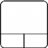

Penggunaan mouse di FreeCAD berisi perintah - perintah yang digunakan untuk navigasi pada tampilan 3D dan berinteraksi dengan objek yang di tampilkan. Ada tiga mode navigasi yang berbeda. Navigasi standar (default) mengarah pada "CAD Navigation,"yang sangat simpel dan praktis, tetapi FreeCAD juga memiliki 2 alternativ mode navigasi yaitu mode Inventor dan mode Blender.
Contents
Penanganan obyek adalah umum untuk semua workbenches.Pola pergerakan mouse dapat digunakan untuk mengontrol posisi objek dan melihat sesuai dengan yang mode Navigasi yang dipilih.
Ada 2 cara untuk merubah mode navigasi:
- Di menu Edit, Preferences Editor, pilih pada bagian Display, klik pada tab 3D View ;
- Dengan klik-kanan pada bagian tampilan 3d yang kosong, kemudian klik Navigation style dan pilih mode yang diinginkan.
Mode ini adalah Nnavigasi standar bawaan dan memungkinkan pemakai mengendalikan tampilan dengan mudah, dan tidak memerlukan tombol keyboard kecuali untuk memilih multi objek.
| Select | Pan | Zoom | Rotate View | Rotate View
Alternate Method |
|---|---|---|---|---|

|

|

|

|

|
| Press the left mouse button over an object you want to select. Holding down ctrl allows the selection of multiple objects. | Click the middle mouse button and move the object around to pan | Use the mouse wheel to zoom in and out. Clicking the middle mouse button re-centers the view to the location of the cursor. | Click first with the middle mouse button, hold it down, and then click the left mouse button and drag the mouse in the desired direction. The cursor location at the middle mouse button click determines the center of rotation. Rotation works like spinning a ball which rotates around its center. If the buttons are released before you stop the mouse motion, the object continues spinning, if this is enabled. A double click with the middle mouse button sets a new center of rotation. | Click first with the middle mouse button, hold it down, and then click the right mouse button and drag the mouse in the desired direction. This method works just like the previously described Rotate View that uses Middle Mouse Button + Left Mouse Button, except that the middle mouse button may be released after the right mouse button is pressed. Users who use the mouse with their right hand may find this Rotate View method easier than the previous method. |

|

|

|
||
| For the Pan mode, press the Ctrl key and press the right mouse button to pan (rev 0.17) | For the Zoom mode, press the Ctrl and Shift key and press the right mouse button to Zoom (rev 0.17) | For the Rotate mode, press the Shift key and press the right mouse button to rotate (rev 0.17) |
Mode navigasi Inventor, tidak ada pemilihan objek pada mode ini. Untuk memilih objek kita harus menekan tombol CTRL.
| Select | Pan | Zoom | Rotate View |
|---|---|---|---|
| ctrl +
|
|
or
|
|
| Hold ctrl and press the left mouse button over an object you want to select. | Click the middle mouse button and move the object around. | Use the mouse wheel to zoom in and out, or click and hold the middle mouse button and click the left mouse button. | Click and drag with the left mouse button to rotate |
Pada mode navigasi Blender, tidak ada perintah pan (menggeser layar 3D). Untuk melalukan penggeseran layar (pan) kamu harus menekan tombol SHIFT.
| Select | Pan | Zoom | Rotate View |
|---|---|---|---|
|
|
shift+ or 
|
|
|
| Press the left mouse button over an object you want to select. | Hold shift and click the middle mouse button and move the object around, or hold down the Left and Right buttons and move. | Use the mouse wheel to zoom in and out. | Click and drag with the middle mouse button. |
In Touchpad Navigation, neither panning, nor zooming, nor rotating the view, are mouse-only (or touchpad-only) operations.
| Select | Pan | Zoom | Rotate View |
|---|---|---|---|

|
shift+ | PgUp / PgDn | alt+ |
| Press the left mouse button over an object you want to select. | Hold shift and move the object around. | Use PgUp and PgDn to zoom in and out. | Hold alt and move the pointer. |
| or | or | ||
| shift+ctrl+
|
shift+ctrl+ | ||
| Hold down both the shift and the ctrl keys, press the left mouse button, and move the pointer. | Hold down both the shift and the ctrl keys and move the pointer. |
This navigation style was tailored for usability with touchscreen and pen, but is very usable with mouse too.


{kind=link}
{kind=link}
Notes on Gesture Navigation style:
- on Windows, the actions of two-finger gestures are separated. The action depends on how one starts the gesture. For example, if one starts two-finger pan, the gesture will only pan. Changing the distance between fingers afterwards will not affect the scaling.
In Maya-Gesture Navigation, all view movements are activated pressing ALT and a mouse button, so that it will be needed to have a 3 button mouse in order to correctly use this navigation mode. Alternately it's possible to use gestures as this mode was been developed over the normal Gesture Navigation mode.
| Select | Pan | Zoom | Rotate View |
|---|---|---|---|
|
|
alt+
|
alt+ or or
|
alt+
|
| Press the left mouse button over an object you want to select. | Hold alt, hold the middle mouse button and drag to pan the view. | Hold alt, hold the right mouse button and drag to zoom in and out or use the mouse wheel to get the same effect. | Hold alt, hold the left mouse button and drag to rotate the object around. |
Selecting objects
Simple selection
Objek dapat dipilih dengan klik-kiri, bisa objek yang ada di tampilan 3D atau di daftar struktur.
Preselection
Ada juga mekanisme "Preselection" yang menyoroti objek dan menampilkan informasi tentang objek tersebut sebelum pemilihan hanya dengan melayang mouse di atasnya. Jika kamu tidak menyukai perilaku itu atau kamu memiliki komputer tua yang lambat, kamu dapat mematikan praseleksi dalam seting preferences.
Manipulating Objects
FreeCAD menawarkan manipulators yang dapat digunakan untuk modifikasi objek atau tampilan visualnya.
Contoh sederhana adalah clipping plane yang dapat diaktifkan dengan menu View → Clipping Plane".
Hardware support
FreeCAD juga mendukung beberapa jenis dari 3D input devices.
Mac OS X Issues
Recently we got reports on the forum from Mac users that those mouse button and key combination do not work as expected. Unfortunately, none of the developers owns a Mac, neither do the other regular contributors. We need your help to determine which mouse buttons and key combination work so we can update this wiki.